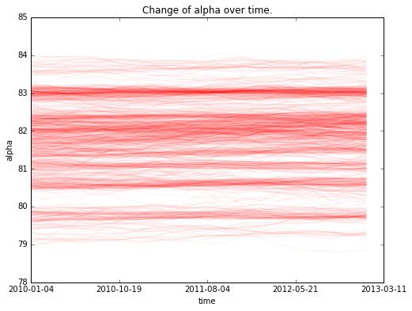
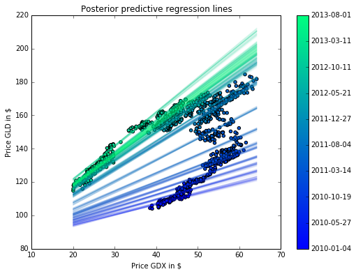

Bayesian Rolling Regression in PyMC3
Author: Thomas Wiecki
- Pairs trading is a famous technique in algorithmic trading that plays two stocks against each other.
- For this to work, stocks must be correlated (cointegrated).
- One common example is the price of gold (GLD) and the price of gold mining operations (GDX).
%matplotlib inline
import pandas as pd
from pandas_datareader import data
import numpy as np
import pymc3 as pm
import matplotlib.pyplot as plt
Lets load the prices of GDX and GLD.
prices = data.YahooDailyReader(symbols=['GLD', 'GDX'], end='2014-8-1').read().loc['Adj Close', :, :].iloc[:1000]
prices.head()
| GDX | GLD | |
|---|---|---|
| Date | ||
| 2010-01-04 | 45.642212 | 109.800003 |
| 2010-01-05 | 46.082275 | 109.699997 |
| 2010-01-06 | 47.201568 | 111.510002 |
| 2010-01-07 | 46.971968 | 110.820000 |
| 2010-01-08 | 47.679898 | 111.370003 |
Plotting the prices over time suggests a strong correlation. However, the correlation seems to change over time.
fig = plt.figure(figsize=(9, 6))
ax = fig.add_subplot(111, xlabel='Price GDX in \$', ylabel='Price GLD in \$')
colors = np.linspace(0.1, 1, len(prices))
mymap = plt.get_cmap("winter")
sc = ax.scatter(prices.GDX, prices.GLD, c=colors, cmap=mymap, lw=0)
cb = plt.colorbar(sc)
cb.ax.set_yticklabels([str(p.date()) for p in prices[::len(prices)//10].index]);

A naive approach would be to estimate a linear model and ignore the time domain.
with pm.Model() as model_reg:
pm.glm.glm('GLD ~ GDX', prices)
trace_reg = pm.sample(2000)
Assigned NUTS to Intercept
Assigned NUTS to GDX
Assigned NUTS to sd_log
[-----------------100%-----------------] 2000 of 2000 complete in 6.4 sec
The posterior predictive plot shows how bad the fit is.
fig = plt.figure(figsize=(9, 6))
ax = fig.add_subplot(111, xlabel='Price GDX in \$', ylabel='Price GLD in \$',
title='Posterior predictive regression lines')
sc = ax.scatter(prices.GDX, prices.GLD, c=colors, cmap=mymap, lw=0)
pm.glm.plot_posterior_predictive(trace_reg[100:], samples=100,
label='posterior predictive regression lines',
lm=lambda x, sample: sample['Intercept'] + sample['GDX'] * x,
eval=np.linspace(prices.GDX.min(), prices.GDX.max(), 100))
cb = plt.colorbar(sc)
cb.ax.set_yticklabels([str(p.date()) for p in prices[::len(prices)//10].index]);
ax.legend(loc=0);

Rolling regression
Next, we will build an improved model that will allow for changes in the regression coefficients over time. Specifically, we will assume that intercept and slope follow a random-walk through time. That idea is similar to the stochastic volatility model.
First, lets define the hyper-priors for
model_randomwalk = pm.Model()
with model_randomwalk:
# std of random walk, best sampled in log space.
sigma_alpha = pm.Exponential('sigma_alpha', 1./.02, testval = .1)
sigma_beta = pm.Exponential('sigma_beta', 1./.02, testval = .1)
Next, we define the regression parameters that are not a single random variable but rather a random vector with the above stated dependence structure. So as not to fit a coefficient to a single data point, we will chunk the data into bins of 50 and apply the same coefficients to all data points in a single bin.
import theano.tensor as T
# To make the model simpler, we will apply the same coefficient for 50 data points at a time
subsample_alpha = 50
subsample_beta = 50
with model_randomwalk:
alpha = pm.GaussianRandomWalk('alpha', sigma_alpha**-2,
shape=len(prices) // subsample_alpha)
beta = pm.GaussianRandomWalk('beta', sigma_beta**-2,
shape=len(prices) // subsample_beta)
# Make coefficients have the same length as prices
alpha_r = T.repeat(alpha, subsample_alpha)
beta_r = T.repeat(beta, subsample_beta)
Perform the regression given coefficients and data and link to the data via the likelihood.
with model_randomwalk:
# Define regression
regression = alpha_r + beta_r * prices.GDX.values
# Assume prices are Normally distributed, the mean comes from the regression.
sd = pm.Uniform('sd', 0, 20)
likelihood = pm.Normal('y',
mu=regression,
sd=sd,
observed=prices.GLD.values)
Inference. Despite this being quite a complex model, NUTS handles it wells.
from scipy import optimize
with model_randomwalk:
# First optimize random walk
start = pm.find_MAP(vars=[alpha, beta], fmin=optimize.fmin_l_bfgs_b)
# Sample
step = pm.NUTS(scaling=start)
trace_rw = pm.sample(2000, step, start=start)
Analysis of results
fig = plt.figure(figsize=(8, 6))
ax = plt.subplot(111, xlabel='time', ylabel='alpha', title='Change of alpha over time.')
ax.plot(trace_rw[-1000:][alpha].T, 'r', alpha=.05);
ax.set_xticklabels([str(p.date()) for p in prices[::len(prices)//5].index]);

However, the slope does.
fig = plt.figure(figsize=(8, 6))
ax = fig.add_subplot(111, xlabel='time', ylabel='beta', title='Change of beta over time')
ax.plot(trace_rw[-1000:][beta].T, 'b', alpha=.05);
ax.set_xticklabels([str(p.date()) for p in prices[::len(prices)//5].index]);

The posterior predictive plot shows that we capture the change in regression over time much better. Note that we should have used returns instead of prices. The model would still work the same, but the visualisations would not be quite as clear.
fig = plt.figure(figsize=(8, 6))
ax = fig.add_subplot(111, xlabel='Price GDX in \$', ylabel='Price GLD in \$',
title='Posterior predictive regression lines')
colors = np.linspace(0.1, 1, len(prices))
colors_sc = np.linspace(0.1, 1, len(trace_rw[-500::10]['alpha'].T))
mymap = plt.get_cmap('winter')
mymap_sc = plt.get_cmap('winter')
xi = np.linspace(prices.GDX.min(), prices.GDX.max(), 50)
for i, (alpha, beta) in enumerate(zip(trace_rw[-500::10]['alpha'].T, trace_rw[-500::10]['beta'].T)):
for a, b in zip(alpha, beta):
ax.plot(xi, a + b*xi, alpha=.05, lw=1, c=mymap_sc(colors_sc[i]))
sc = ax.scatter(prices.GDX, prices.GLD, label='data', cmap=mymap, c=colors)
cb = plt.colorbar(sc)
cb.ax.set_yticklabels([str(p.date()) for p in prices[::len(prices)//10].index]);
